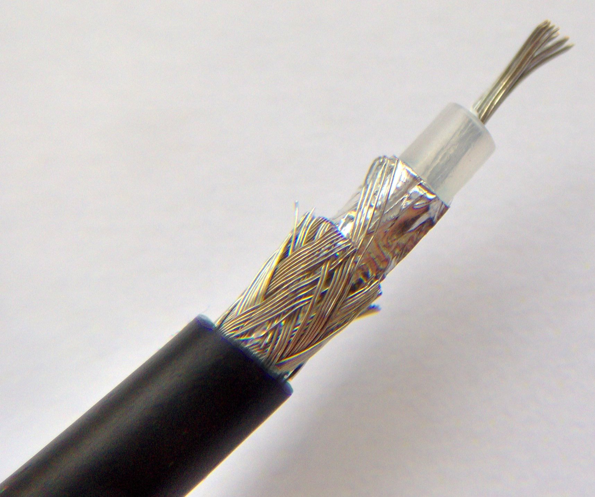

El cable coaxial es menos sensible a interferencias y tiene un ancho de banda mayor a par trenzado(otro medios de trasmisión) por lo que puede alcanzar velocidades de trasmisión mayores.
El cable coaxial esta compuesto por multiples fibras en su parte central por donde circula la señal, el cual se encutra rodeado por un material aislante, este material esta rodeado por un conductor cilindrico presentado como una malla trenzada que aisla al conductor central de posibles interferencias

Hay dos tipos fundamentales de cables coaxiales los cuales son:
Cable coaxial de banda base(su uso es para trasmisión digital)
El cable coaxial de bansa base(50 ohms): se utiliza para la trasmisión digital el ancho de banda máximo que se puede obtener depende de la longitud del cable, para cables de 1 km son factibles velocidades de trasmisión de datos de hasta 10 Mbps y en longitudes menores es posible obtener velocidades superiores. El cable coaxial de banda base se desglosa en dos tipos: Coaxial grueso:
Comenzo a utilizarse en redes locales(fue el primer tipo de cable utilizado en la tecnologia Ethernet) y actualmente solo se emplea para realizar la estructura de distribucion de red. Coaxial fino
Dada su flexibilidad es mas facil de instalar, aunque es mas caro y posee menor inmunidad frente a interferencias. por lo que se utiliza pricipalmente para trasmisiones de baja potencia y radiofrecuencia. Cable coacila de banda ancha(utilizado para trasmisión analogica)
El cable coaxial de banda ancha(75 ohms): se utiliza para la trasmisión analogica, un ejemplo seria el envio de señal de televisión por cable.